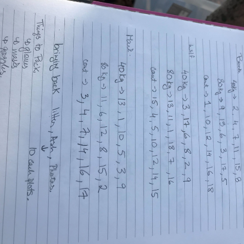
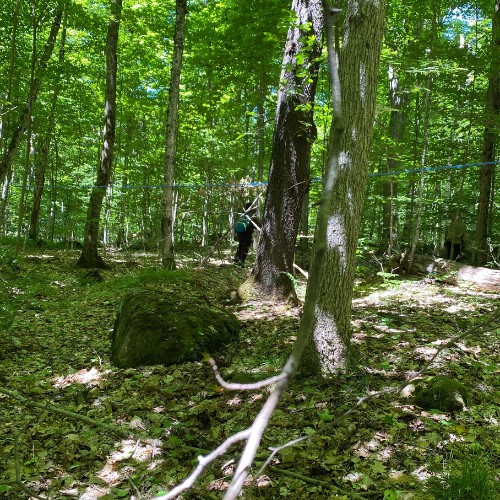
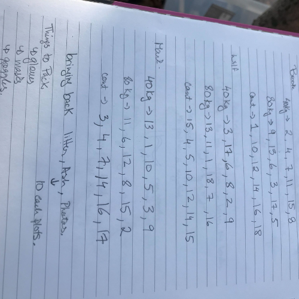
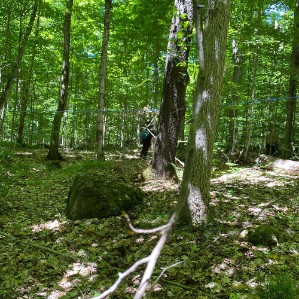

Kayla O'Neill
About Me
Background Information
My name is Kayla O'Neill and I have a background in environment and sustainability. I love nature and being outside, which is why I decided to pursue an environmental education background. I have an interest in forestry, which is why I had decided to study forest systems in the past. This allowed me to spend a great amount of time in nature, more particularly, forests in Muskoka, Ontario.
My Past Research
While studying at Trent University, I had the privilege to study a research project being conducted by The Friends of Muskoka Watershed. This research project looked at the effects of calcium deficiencies in the Muskoka forest. These deficiencies had been brought on by human actions such as farming but also through acid rain. The Friends of Muskoka Watershed was convinced that using the wood ash that Muksoka residents burnt in their home fireplaces and kitchens, we could revert some of the calcium deficiencies in the forests.
  
  To learn more work about my work and education history, check out my resume.